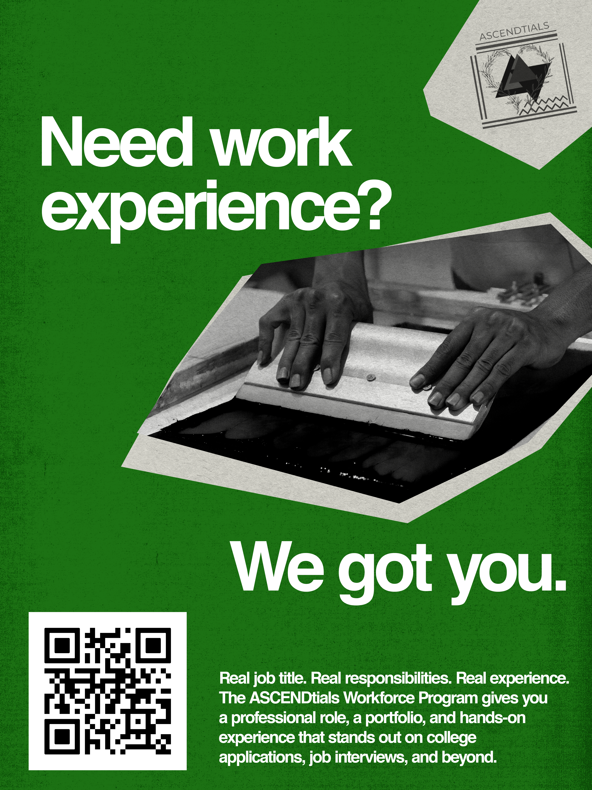
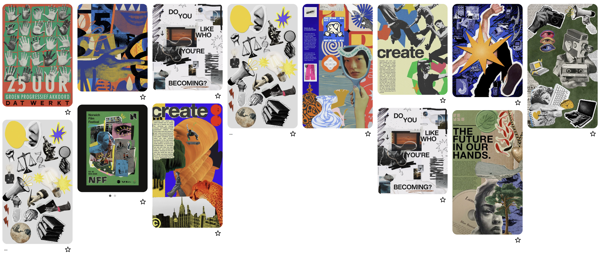

Design Intensive Portfolio
Open in a new tab
A series of promotional flyers for the nonprofit organization ASCENDtials' new youth workforce program. Directed at San Diego youth looking for career growth opportunities, I designed the flyers to be bold and to the point. I incorporated influences from digital collage to reflect the creative nature of the program.
Made with Canva.

A Pinterest board of digital collage works made for visual inspiration.